C05 — Initiation au dessin technique : lire une mise en plan
Comprendre les normes du dessin industriel : projections orthogonales et disposition des vues, types de traits, formats et cartouche ; vues particulières, coupes et sections, hachures, filetages ; terminologie des surfaces, formes techniques et éléments standards (assemblage, guidage, transmission…).
1. Résumé de cours détaillé
1.1 Introduction : pourquoi un dessin normalisé ?
Le dessin technique vise à une représentation fidèle des objets, en forme et en dimension. Le support (papier puis écran) impose de déformer l'objet par un jeu de perspective. Gaspard Monge (1746-1818), ingénieur lyonnais, propose les premières formalisations de représentation (perspective conique, diédrique, triédrique…). La normalisation arrive au début du XXᵉ siècle (norme allemande DIN) en réponse aux exigences croissantes de l'industrie.
1.2 Projections (norme NF E04-108-520)
Une seule projection ne suffit pas pour représenter un objet sans ambiguïté : on utilise un ensemble de projections qui sont des projections orthogonales. Leurs positions relatives et leurs directions sont normalisées dans un cube de projection.
2. On place l'objet au « centre » du trièdre de sorte que des directions privilégiées de l'objet soient parallèles aux faces du trièdre.
3. On représente sur les faces du trièdre les projections de l'objet suivant des directions orthogonales à chacun des plans.
Échelle de représentation = rapport \(\dfrac{\text{dimension dessinée}}{\text{dimension de l'objet réel}}\) (norme NF E04-506). On se limite, sauf besoin, aux échelles normalisées : réduction 1/2, 1/2,5, 1/5, 1/10, 1/20, 1/50… ; vraie grandeur 1 ; agrandissement 2, 2,5, 5, 10, 20, 50…
Projection dans le plan P1 = vue de face (observateur en face de l'objet) ; plan P2 = vue de dessus (observateur au-dessus) ; plan P3 = vue de droite (observateur à droite)…
En « dépliant » le cube de projection autour de la vue de face :
- la vue de droite est placée à gauche de la vue de face ;
- la vue de gauche est placée à droite de la vue de face ;
- la vue de dessus est placée au-dessous de la vue de face ;
- la vue de dessous est placée au-dessus de la vue de face ;
- la vue d'arrière est placée indifféremment à droite ou à gauche des vues.
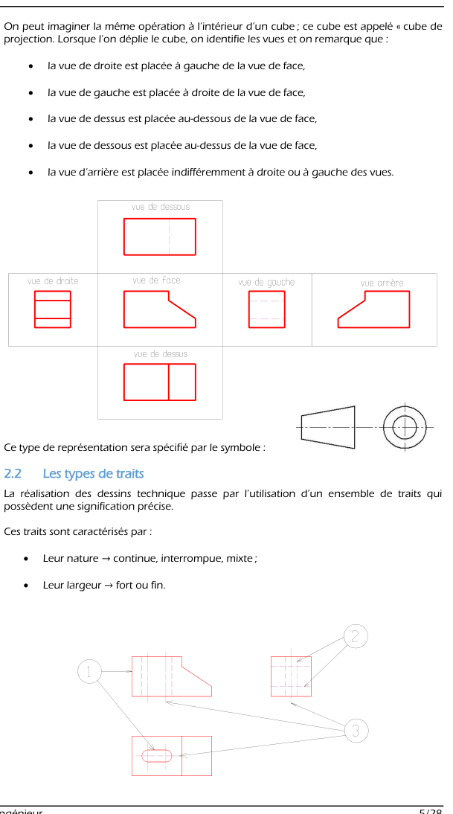
1.3 Les types de traits
Un trait est caractérisé par sa nature (continue, interrompue, mixte) et sa largeur (fort E ou fin E/2). Pour la reprographie, la distance entre deux traits ne doit jamais être inférieure à 0,7 mm (portemines recommandés en 0,5 ou 0,7 mm).
| N° | Trait | Utilisation |
|---|---|---|
| 1 | Continu fort (E) | arêtes visibles, contours vus, flèches de sens d'observation |
| 2 | Interrompu fin (E/2) | arêtes cachées, contours cachés, fonds de filets cachés |
| 3 | Continu fin | lignes d'attache et de cote ; hachures ; axes courts ; fonds de filets vus ; cercles de pied des roues dentées ; contours de sections rabattues ; arêtes fictives ; constructions géométriques |
| 4 | Mixte fin à point et un tiret long | axes de révolution, axes de symétrie, cercle primitif des engrenages |
| 5 | Continu fin ondulé ou rectiligne en zigzag | limites de vues partielles, limites de coupes et sections locales |
| 6 | Mixte fort à un point et un tiret long | indication de plan de coupe et de section ; surfaces à spécification particulière ; traitement des surfaces ; partie restreinte d'un élément ; zone de mesure restreinte |
| 7 | Mixte fin à deux points et un tiret long | contours de pièces voisines ; positions de pièces mobiles ; contours primitifs ; lignes de centre de gravité ; parties situées en avant d'un plan |
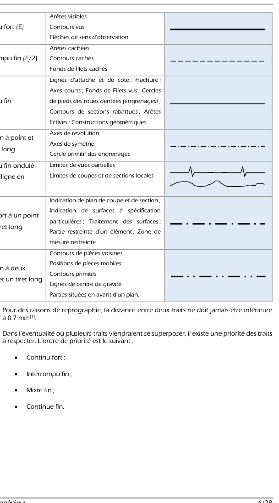
1.4 Formats des dessins et cartouche
Le format et la présentation sont normalisés : réduction du nombre de formats, archivage et classement simplifiés, cohérence de présentation facilitant la consultation (cf. « Guide du dessinateur industriel », § 3).
1.5 Exemple et applications du cours
Le CM propose trois applications graphiques à réaliser sur le dessin d'un bloc à rainure en V :
- A1 — Reporter un point (repéré sur la vue en perspective) dans les trois vues ;
- A2 — Colorier trois surfaces (avec des couleurs différentes) dans les trois vues ;
- A3 — Parmi 4 figures de cubes assemblés (1, A, B, C), trouver les deux figures identiques (test de vision dans l'espace).
1. Placer le point sur une vue, par exemple la vue de face ;
2. Le reporter sur la vue de dessus par une ligne de rappel verticale (même abscisse) puis la profondeur lue sur la perspective ;
3. Le reporter sur la vue de gauche/droite par une ligne de rappel horizontale (même hauteur) ;
4. Pour colorier une surface : l'identifier sur la perspective (plan incliné, plan de face…), puis la retrouver dans chaque vue (une surface plane inclinée apparaît déformée — en raccourci — dans les vues où elle n'est pas de bout ; un plan parallèle au plan de projection apparaît en vraie grandeur, un plan perpendiculaire apparaît en trait).
1.6 Représentations particulières
Ces représentations allègent le tracé, évitent des projections complexes et s'adaptent à la mise en page :
| Représentation | Principe |
|---|---|
| Vue déplacée | observation suivant une direction oblique (flèche + lettre), la vue est placée là où la mise en page le permet ; évite des projections déformées |
| Vue interrompue | on « raccourcit » une pièce trop longue en n'en représentant que les extrémités, avec un trait fin ondulé ou en zigzag (ex. arbre de moteur) |
| Demi-vue / quart de vue (vues partielles) | pièce symétrique : on ne dessine qu'une moitié (ou un quart) ; indication d'une demi-vue par deux petits traits à l'axe de symétrie |
| Vue locale | représentation d'un détail extrait de la vue principale, relié par un trait mixte fin |
| Demi-vue rabattue | la demi-face cachée est représentée par des traits mixtes fins à deux tirets, rattachée à la vue principale |
| Position extrême de pièces mobiles | une position en traits normaux et l'autre en trait mixte fin à deux tirets |
| Méplat (surface plane de manœuvre) | usiné sur des surfaces de révolution, indiqué par ses diagonales principales en trait fin |
| Détail | grossissement d'une partie peu visible à l'échelle du tracé ; indiquer le nom du détail (lettre) et l'échelle du détail |
| Arêtes fictives | sur pièces moulées ou pliées, intersections masquées par un arrondi : génératrices fictives en traits continus fins, non reliées au bord de la pièce |
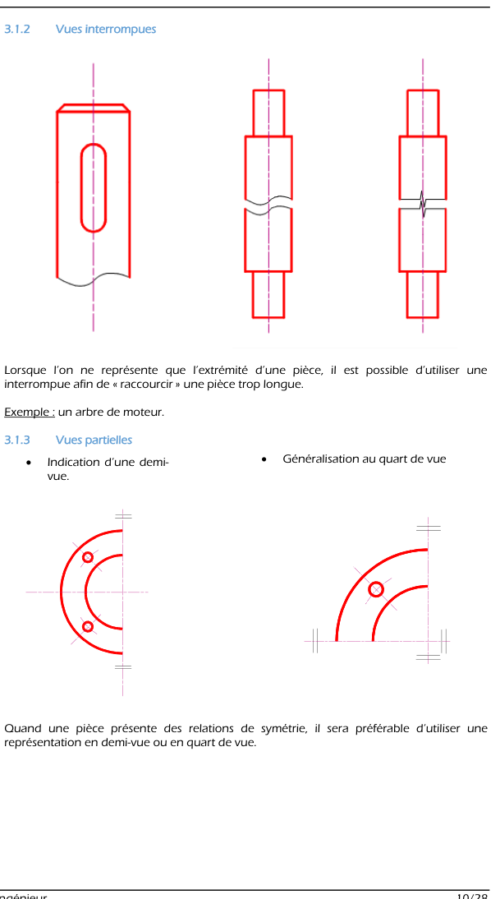
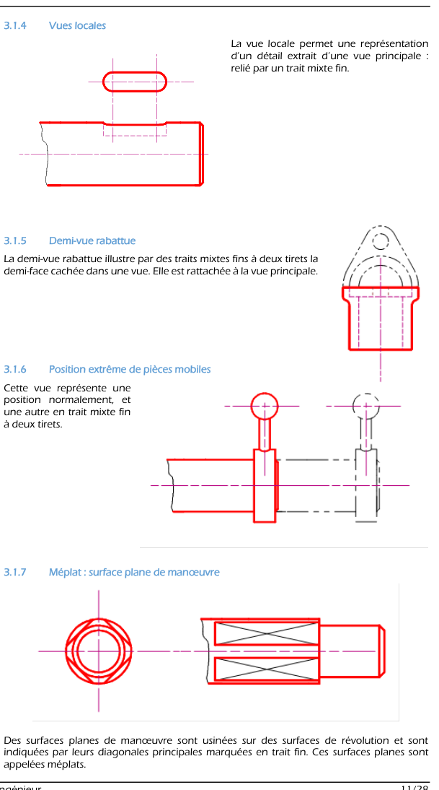
1.7 Coupes
2. Repérer en traits forts la trace du plan de coupe (mixte fort, extrémités) ;
3. Repérer le sens de projection par une flèche en traits forts ;
4. Repérer la coupe par deux lettres (A-A…), sur le plan de coupe et sur la vue coupée.
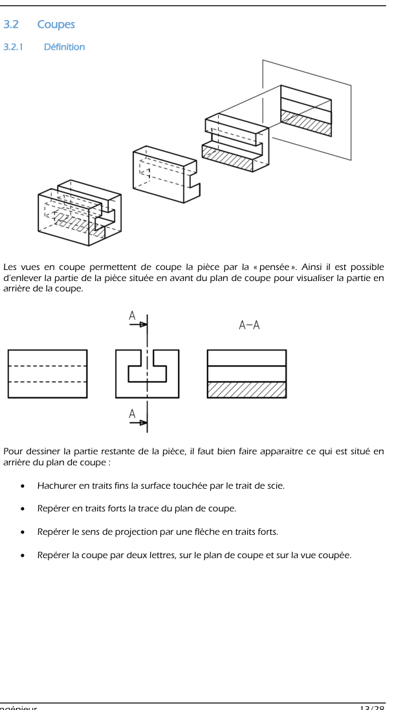
Remarques et hachures
• Les hachures ne peuvent pas s'arrêter sur un trait interrompu.
• Dans certains cas (demi-coupe), les hachures s'arrêtent sur un trait mixte (axe de symétrie).
• L'intervalle entre les traits est fonction de la surface à hachurer ; l'orientation ne doit pas suivre les directions principales des contours.
Un type de hachure caractérise une famille de matériaux :
| Matériau | Hachure |
|---|---|
| Acier et fonte | traits fins parallèles inclinés à 45° (hachure de référence) |
| Aluminium et alliages | traits inclinés, motif propre à la famille (voir la figure ci-dessous) |
| Cuivre et alliages | traits inclinés plus rapprochés, motif propre à la famille (voir la figure) |
| Plastiques et isolants | traits fins horizontaux |
| Béton | trame pointillée (petits cercles et points) |
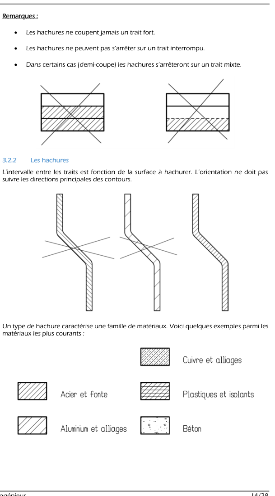
Coupes particulières
- Arêtes curvilignes : ne pas oublier de représenter les arêtes curvilignes révélées par la coupe.
- Exceptions — on ne hachure pas : un axe qui traverse un alésage ; les pièces de petites dimensions (vis, clavette…) ; les pièces minces dans leur plus grande dimension (nervures).
- Demi-coupe : pour une pièce symétrique par rapport à un axe, on dessine une demi-vue accolée à une demi-coupe ; les traits forts ou les hachures peuvent s'arrêter sur l'axe de symétrie.
- Coupe par plans décalés : couper différentes parties de la pièce par des plans parallèles ; supposer ces plans ramenés sur un seul plan de projection ; changements de plan en traits forts ; un trait d'axe indique le changement de plan ; hachurage avec décalage d'un demi-pas entre les surfaces.
- Coupe par plans concourants : couper par des plans concourants ; le plan de coupe oblique est ramené par rotation dans le prolongement de l'autre et on projette sur ce plan ; changements de plan en traits forts ; trait d'axe pour le changement de plan ; on ne dessine pas les parties cachées dans le plan rabattu.
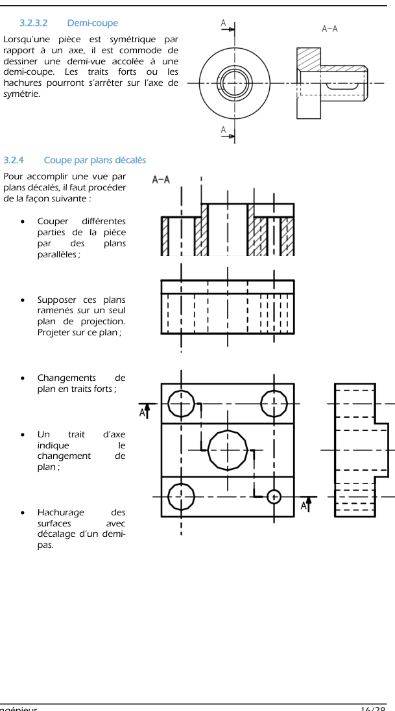
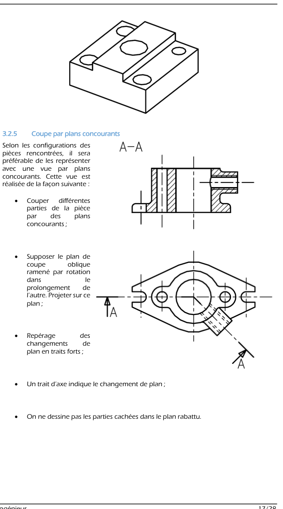
Sections
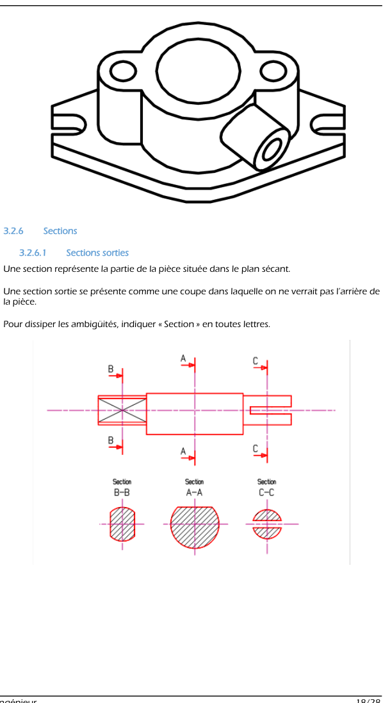
1.8 Filetages
Trou taraudé borgne : en traits forts, le trou existant avant l'usinage de l'hélice ainsi que la fin du taraudage (fond du trou à 120° d'angle au sommet) ; en traits fins, le fond du taraudage.
Tige filetée dans trou taraudé : la convention de dessin de la vis l'emporte dans l'assemblage (la tige reste dessinée entière, le taraud n'apparaît pas à sa place).
Trou taraudé débouchant ; gorges sur l'arbre ou dans l'alésage : elles permettent de dégager la fin de l'usinage (sortie de l'outil).
Cotation : toujours sur les traits extérieurs ; ne pas mettre le symbole Ø ; la lettre M indique un filetage métrique normalisé (ex. M8).
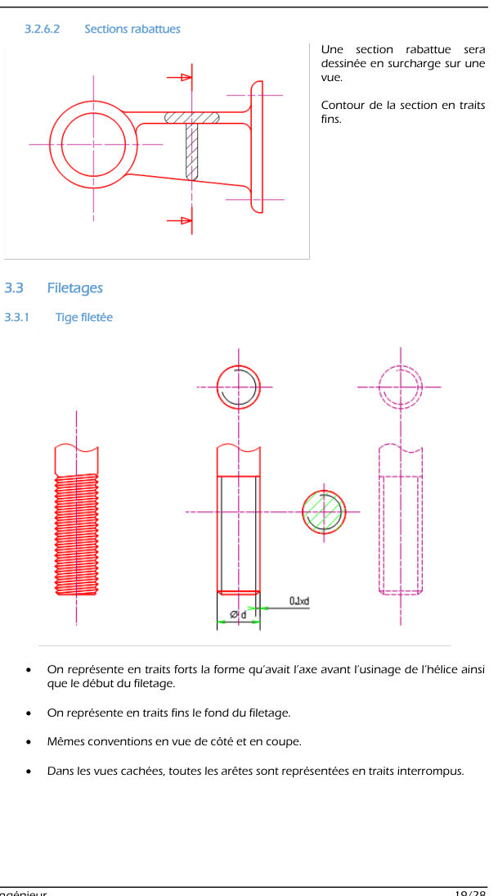
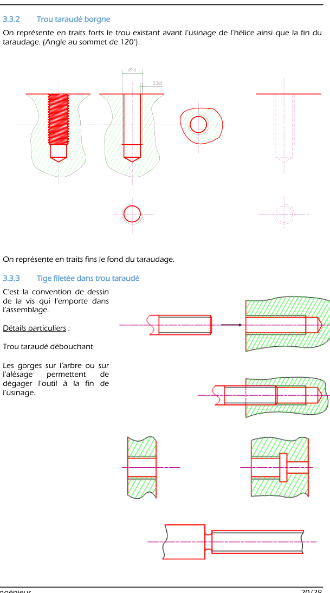
1.9 Terminologie
Les surfaces élémentaires
Surface plane (un plan), cylindrique (un cylindre), conique (un cône), sphérique (une sphère), hélicoïdale (un hélicoïde), torique (un tore).
Les formes techniques
| Forme | Définition |
|---|---|
| Fraisure | surface conique intérieure utilisée, en général, pour « noyer » une tête de vis (FS, FHC) |
| Épaulement | composé en général d'une surface cylindrique et d'une surface plane, ou de deux surfaces planes implicitement perpendiculaires |
| Rainure | entaille de différentes formes et dimensions selon le rôle fonctionnel ; généralement trois plans perpendiculaires (rainure de guidage, rainure de clavetage) |
| Chanfrein | surface de faible étendue obtenue par suppression d'une arête (sécurité) ; sur une pièce cylindrique, c'est une surface conique de révolution ; facilite aussi le montage des pièces |
| Arrondi (surface convexe) | petite surface arrondie qui supprime une arête vive ou raccorde deux surfaces (pièces moulées en particulier) |
| Congé (surface concave) | petite surface raccordant deux surfaces formant un angle rentrant (pièces moulées en particulier) |
| Méplat | surface plane coupant un cylindre droit parallèlement à son axe |
| Filetage | surface hélicoïdale extérieure taillée sur un cylindre, utilisée avec un taraudage |
| Gorge | rainure circulaire sur un arbre : permet la mise en place d'un anneau élastique, d'un joint ; sert de dégagement pour éviter un contact |
| Tenon (languette) | forme destinée à s'ajuster dans une rainure, en général pour assurer une liaison glissière ; « languette » = tenon de grande longueur |
| Trou oblong (lumière) | trou plus long que large, terminé par deux demi-cylindres ; en général pour une fonction de réglage |
| Lumière | orifice de forme quelconque, généralement dans des pièces minces |
| Bossage | volume en saillie qui limite l'importance d'une surface usinée sur des pièces moulées |
| Nervure | volume de base en général triangulaire, rapporté ou moulé sur une pièce pour augmenter sa rigidité sans trop de poids |
| Évidement circulaire | dégagement permettant de réduire la longueur de portée d'un arbre |
| Évidement sur semelle | dégagement permettant de réduire l'étendue de la surface d'appui |
| Chambrage | évidement intérieur qui réduit la longueur de portée d'un alésage |
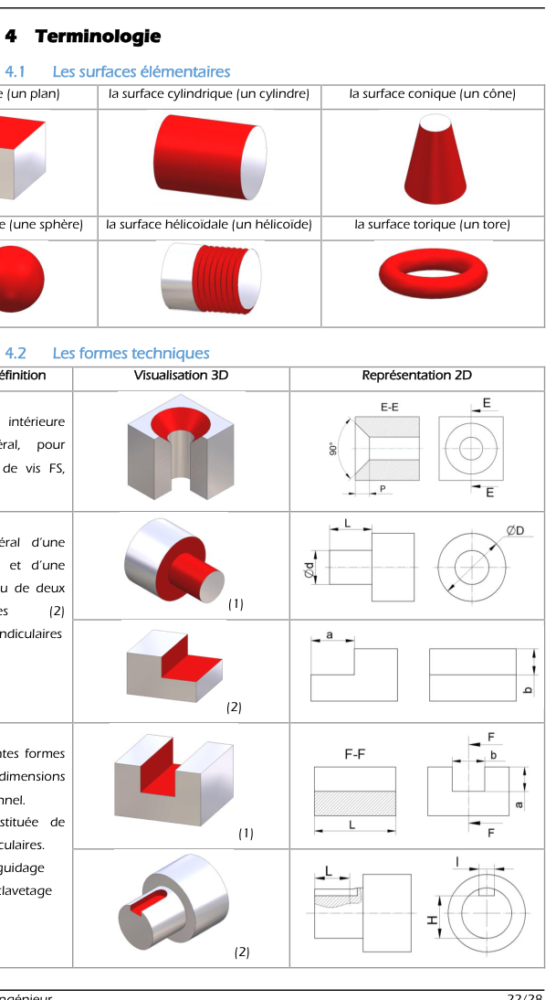
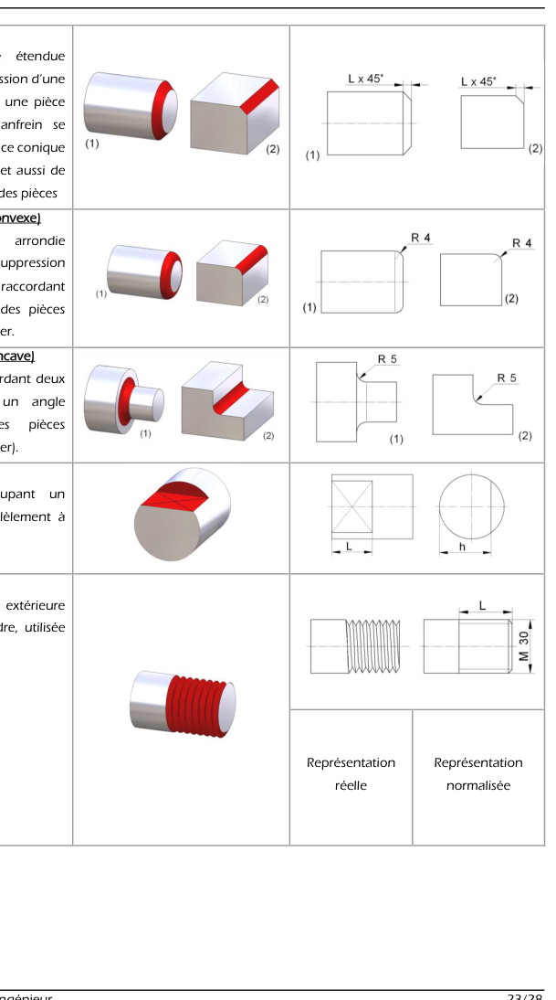
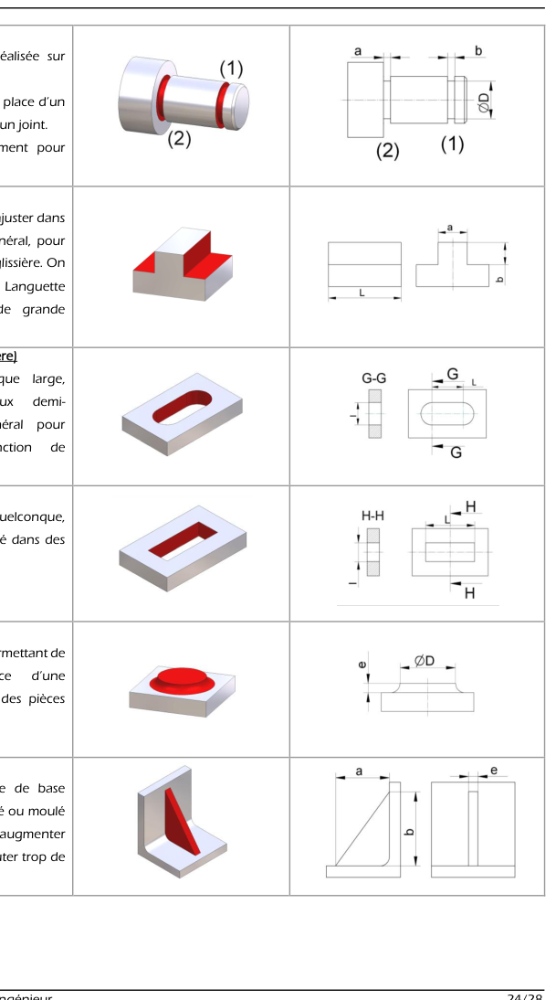
Éléments standards et éléments normalisés
| Catégorie | Éléments |
|---|---|
| Profilés / produits semi-finis | tube carré, tube rond, barre ronde, barre carrée, tôle, plaque, plat, cornière |
| Assemblage | vis à tête hexagonale (vis H), vis à tête cylindrique à six pans creux (vis CHC), rondelle, écrou, goujon, anneau élastique d'extérieur (circlips pour arbre) et d'intérieur (circlips pour alésage), goupille élastique (goupille Mécanindus) |
| Guidage en rotation | bague autolubrifiée (coussinet), roulement rigide à une rangée de billes |
| Transmission de mouvement | train d'engrenages, pignons et chaîne, poulies et courroie, pignon-crémaillère |
| Autres | joint torique (fonction étanchéité, matière caoutchouc) ; ressort (restitution d'effort, matière acier) ; clavette (liaison complète démontable) |
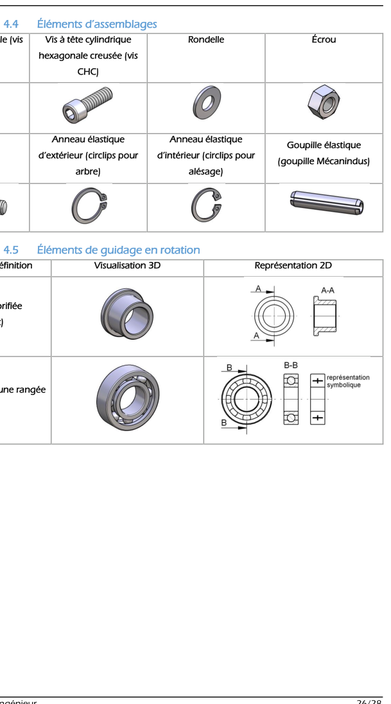
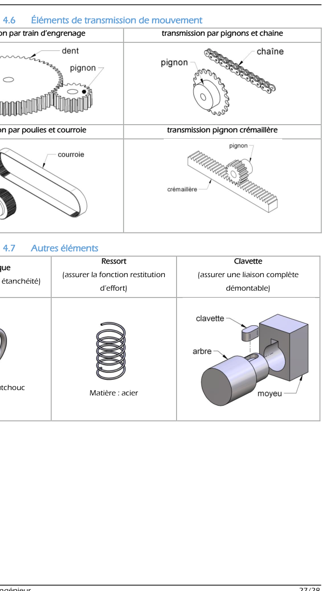
1.10 Savoirs et savoir-faire (bilan du CM)
2. Exercices d'entraînement (créés) avec corrections
Seul le CM de C05 a été fourni (pas de TD) : exercices créés à partir du cours (questions de lecture de dessin, de normes et de vocabulaire).
Associer chaque élément du dessin au type de trait normalisé
| Élément à tracer | Trait |
|---|---|
| Contour d'une pièce visible | continu fort |
| Alésage non visible (derrière une paroi) | interrompu fin |
| Ligne de cote et ligne d'attache | continu fin |
| Hachures d'une coupe | continu fin |
| Axe d'un arbre, axe de symétrie | mixte fin (1 point, 1 tiret long) |
| Extrémités du plan de coupe A-A | mixte fort (1 point, 1 tiret long) |
| Position extrême d'une pièce mobile, contour d'une pièce voisine | mixte fin à deux points |
| Limite d'une vue interrompue | continu fin ondulé / zigzag |
Si un trait continu fort et un trait interrompu se superposent, le continu fort l'emporte (priorité : fort > interrompu fin > mixte fin > continu fin).
Q1 — Où place-t-on la vue de droite ? la vue de dessus ? la vue de dessous ? la vue de gauche ?
Vue de droite : à gauche de la vue de face. Vue de dessus : en dessous. Vue de dessous : au-dessus. Vue de gauche : à droite. Vue d'arrière : à droite ou à gauche des autres vues (indifféremment).
Q2 — Combien de vues minimum faut-il pour représenter sans ambiguïté un cylindre plein ? Un bloc avec un trou borgne sur la face de dessus ?
Un cylindre plein : 2 vues suffisent (vue de côté : rectangle ; vue de face : cercle). Le bloc avec trou borgne : la vue de dessus (cercle) + une vue de côté avec le trou en interrompu fin (ou en coupe) pour donner la profondeur. Une seule projection ne suffit jamais.
Q1 — Une pièce de 120 mm est représentée par un segment de 60 mm. Quelle est l'échelle ?
Échelle \(=\dfrac{\text{dessinée}}{\text{réelle}}=\dfrac{60}{120}=\dfrac12\) : 1/2 (réduction).
Q2 — Un détail de 4 mm est dessiné à l'échelle 5 : quelle longueur sur le dessin ?
\(4\times5=20\) mm (agrandissement).
Q3 — Retrouver les dimensions A3 à partir de l'A0 (841 × 1189 mm)
On plie en deux le grand côté à chaque fois : A1 : 594 × 841 ; A2 : 420 × 594 ; A3 : 297 × 420 ; A4 : 210 × 297. Vérification du rapport : \(\dfrac{1189}{841}\approx1{,}414=\sqrt2\) ✔ ; \(\dfrac{420}{297}\approx1{,}414\) ✔.
Q4 — Surface d'un A4 ?
\(210\times297=62\,370\) mm² \(=0{,}0624\) m² \(\approx\dfrac{1}{16}\) m² (l'A0 vaut ≈ 1 m² et on divise la surface par 2 quatre fois).
1/2 ; 20 mm ; A3 = 297 × 420 mm ; A4 ≈ 0,0624 m²
Dire si chaque affirmation est vraie (V) ou fausse (F) et corriger
1) « Les hachures peuvent traverser un trait fort. » F — elles ne coupent jamais un trait fort.
2) « Les hachures s'arrêtent sur un trait interrompu fin. » F — elles ne s'arrêtent pas sur un interrompu ; elles s'arrêtent sur un trait fort (contour) ou, en demi-coupe, sur un trait mixte (axe de symétrie).
3) « On hachure les nervures coupées dans leur plus grande dimension. » F — on ne hachure pas les pièces minces dans leur plus grande dimension (nervures), ni les petites pièces (vis, clavette), ni un axe qui traverse un alésage.
4) « Deux pièces voisines coupées doivent avoir des hachures de même sens. » F — on change l'orientation ou l'espacement pour distinguer les pièces voisines ; les hachures d'une même pièce gardent la même orientation et le même pas (avec un décalage d'un demi-pas aux changements de plan d'une coupe à plans décalés).
5) « Le type de hachure renseigne sur la famille de matériau. » V — acier/fonte, aluminium, cuivre, plastiques, béton.
Règle de fond : la hachure représente la matière touchée par le plan de coupe, rien d'autre.
Choisir la représentation la plus adaptée
1) Pièce de révolution symétrique dont on veut voir à la fois l'extérieur et l'intérieur : demi-coupe (demi-vue accolée à une demi-coupe, axe de symétrie en mixte fin).
2) Pièce avec plusieurs perçages parallèles non alignés : coupe par plans décalés (changements de plan en traits forts, hachures décalées d'un demi-pas).
3) Pièce avec des perçages à 120° autour d'un axe : coupe par plans concourants (plan oblique rabattu dans le prolongement de l'autre ; on ne dessine pas les parties cachées dans le plan rabattu).
4) On ne veut montrer que la forme du profil d'un bras sans le reste de la pièce : section (sortie ou rabattue).
5) Un détail trop petit pour être lu : vue en détail (nom et échelle du détail).
Q1 — Comment cote-t-on un filetage de diamètre 8 mm métrique ?
« M8 » (la lettre M indique un filetage métrique normalisé), sans symbole Ø, la cote étant portée sur les traits extérieurs (diamètre du filetage).
Q2 — Quels traits pour une tige filetée vue de côté ?
Trait fort pour le sommet des filets (forme avant usinage de l'hélice) et la limite de filetage ; trait fin pour le fond du filetage.
Q3 — Quel angle au fond d'un taraudage borgne et pourquoi une gorge ?
Fond de trou à 120° (pointe du foret). La gorge sert de dégagement à l'outil en fin de filetage.
Dans l'assemblage d'une vis dans un taraudage, la convention de la vis l'emporte : la vis est dessinée entière, sans interrompre ses filets par ceux du taraudage.
Nommer la forme technique décrite
1) « Surface conique intérieure pour noyer une tête de vis FHC » → fraisure.
2) « Raccordement concave entre deux surfaces formant un angle rentrant sur pièce moulée » → congé.
3) « Suppression d'une arête vive, en cône de révolution sur un arbre, facilite le montage » → chanfrein.
4) « Volume triangulaire ajouté pour rigidifier sans alourdir » → nervure.
5) « Trou plus long que large pour le réglage de position » → trou oblong (lumière).
6) « Rainure circulaire sur un arbre recevant un anneau élastique » → gorge.
7) « Surface plane usinée sur un cylindre, parallèle à son axe, pour une clé » → méplat.
8) « Évidement intérieur qui réduit la longueur de portée d'un alésage » → chambrage.
À ne pas confondre : arrondi (convexe, adoucit une arête) et congé (concave, angle rentrant) ; évidement circulaire (sur arbre) et chambrage (dans un alésage).
Quelle démarche suivre devant un dessin d'ensemble ?
1) Cartouche : nom du produit, échelle, format, symbole de projection (européen ?), matière, révision.
2) Vue principale (de face) : repérer l'objet global et son orientation.
3) Vues liées : flèches de sens d'observation, traces de plan de coupe (mixte fort) et lettres A-A, B-B ; positionner chaque vue par la règle de projection.
4) Hachures : identifier les pièces coupées (orientation et type → matériau) ; deux pièces voisines ont des hachures différentes.
5) Formes techniques de chaque pièce (alésages, rainures, congés, filetages).
6) Éléments standards (vis, rondelles, roulements, joints) via la nomenclature repérée par des numéros cerclés.
Objectif final : être capable de construire le schéma cinématique (identifier les pièces, les liaisons) et de comprendre le fonctionnement du mécanisme (voir C10).
📂 Documents donnés
Document original du chapitre (cours magistral). Cliquez pour ouvrir le PDF.
Cours (CM)
Les documents sont inclus dans ce dossier (sous-dossier documents\) — le paquet est autonome et partageable tel quel.